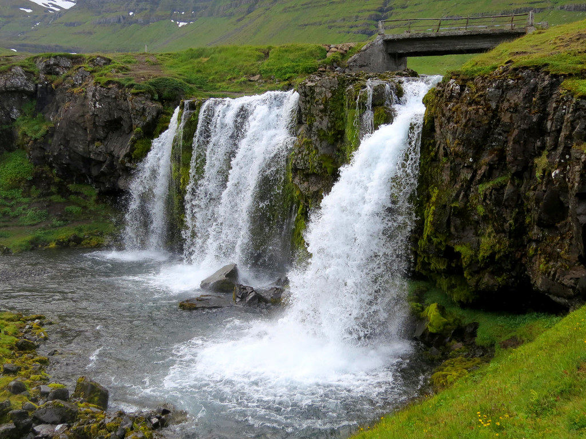

Qué está pasando realmente
Si conoces a alguien de Islandia y le preguntas su apellido, es muy probable que la respuesta te confunda al principio: puede que termine en "-son" si es hijo, o en "-dóttir" si es hija, precedido no por un apellido familiar heredado a lo largo de generaciones, sino por el nombre de pila de su propio padre o, cada vez con más frecuencia, de su madre. Así, alguien llamado Jón, hijo de un hombre llamado Einar, se apellidará "Einarsson" —literalmente, "hijo de Einar"—, mientras que su hermana, hija del mismo padre, se apellidará "Einarsdóttir", "hija de Einar". Ninguno de los dos hermanos comparte el mismo "apellido" que sus propios hijos tendrán en el futuro.
Este sistema, conocido técnicamente como patronímico —o matronímico, cuando se basa en el nombre de la madre en lugar del padre—, era en realidad la norma habitual en gran parte de la Europa medieval y escandinava antigua, antes de que la mayoría de los países fueran adoptando gradualmente, entre los siglos XVI y XIX, sistemas de apellidos familiares fijos que se transmiten sin cambios de generación en generación, tal como funciona hoy en la inmensa mayoría del mundo. Islandia, sin embargo, decidió conservar deliberadamente el sistema patronímico tradicional, resistiéndose activamente a las presiones históricas de modernización administrativa que sí transformaron a sus vecinos nórdicos como Noruega, Suecia o Dinamarca.
Esta decisión no fue casualidad ni simple inercia: Islandia aprobó formalmente una legislación específica, la Ley de Nombres Personales, que regula con detalle cómo deben construirse los nombres de sus ciudadanos, priorizando explícitamente el sistema patronímico o matronímico tradicional sobre los apellidos de familia heredados al estilo del resto de Europa. La ley incluso restringe, con ciertas excepciones históricas para familias que ya tenían apellidos fijos antes de la reforma, la posibilidad de que los islandeses adopten libremente nuevos apellidos familiares transmisibles, reforzando así la continuidad de la tradición patronímica como parte central de la identidad nacional islandesa.
En Islandia, la guía telefónica nacional se ordena tradicionalmente por el nombre de pila, no por el "apellido", porque este cambia en cada generación.
De dónde viene todo esto
La consecuencia práctica más llamativa de este sistema es que, en Islandia, dirigirse a alguien por su nombre de pila —nunca por el "apellido" patronímico— es la norma social absoluta en todos los contextos, incluyendo situaciones formales que en otros países exigirían el uso del apellido: documentos oficiales, medios de comunicación, e incluso la guía telefónica nacional tradicional, que durante décadas se organizó alfabéticamente por el nombre de pila y no por el patronímico, precisamente porque este último cambia en cada generación y no funciona como un identificador familiar estable y compartido.
Este sistema también refleja, de forma interesante, cierta impronta igualitaria dentro de la estructura familiar islandesa: al no existir un "apellido de familia" fijo que se transmita automáticamente por línea paterna como ocurre en la mayoría de las culturas occidentales, cada islandés construye su identidad de nombre de forma individual y directa a partir de la generación inmediatamente anterior, sin cargar con el peso simbólico de un linaje familiar extendido codificado en su nombre legal. Además, la legislación islandesa moderna permite explícitamente elegir el matronímico —basado en el nombre de la madre— en lugar del patronímico tradicional, una opción cada vez más utilizada por padres que buscan reflejar de forma más igualitaria la identidad familiar de sus hijos.
Más allá de lo básico
Con el crecimiento del turismo internacional y la administración digital moderna, este sistema ha generado también desafíos prácticos curiosos: numerosos sistemas informáticos, formularios de aerolíneas y bases de datos internacionales, diseñados asumiendo el modelo estándar de "nombre más apellido familiar fijo", no siempre saben procesar correctamente los patronímicos islandeses, generando errores administrativos ocasionales que los propios islandeses han aprendido a anticipar y explicar pacientemente cuando viajan o interactúan con instituciones extranjeras poco familiarizadas con su sistema.
El Comité de Nombres de Islandia, el Mannanafnanefnd, no se limita a aprobar nombres nuevos automáticamente: rechaza activamente propuestas que no se ajustan a la gramática y ortografía islandesas, un proceso que ha llegado a la prensa internacional en más de una ocasión. Algunos padres han llevado al comité a juicio por nombres rechazados, y en un caso notable de 2013, una adolescente llamada Blær ("brisa suave") ganó una demanda para poder usar legalmente ese nombre por primera vez, después de que las autoridades lo hubieran considerado inválido gramaticalmente para una niña.
La cultura de llamarse solo por el nombre de pila llega tan lejos que se aplica incluso en la cúspide: los islandeses suelen referirse a su presidente o primer ministro solo por su nombre de pila, tanto en contextos oficiales como en la conversación cotidiana, sin que eso se perciba como una falta de respeto como podría ocurrir en otros lugares. Es una señal pequeña pero reveladora de hasta qué punto el sistema patronímico moldea no solo cómo se nombra a los islandeses, sino lo plana e informal que tiende a sentirse, en comparación, toda la jerarquía social del país.

Qué debes saber si viajas
Algunas cuestiones prácticas si tienes que lidiar con nombres islandeses:
- Dirígete a los islandeses por su nombre de pila tanto en contextos informales como formales: es la norma, no resulta excesivamente familiar.
- No asumas que los familiares comparten apellido: los hermanos suelen tener patronímicos o matronímicos distintos.
- El directorio telefónico de Islandia se ordena por nombre de pila, algo genuinamente útil de saber si necesitas buscar a alguien.
- Si rellenas formularios internacionales, ten paciencia: las convenciones de nombres islandesas no siempre encajan en los campos estándar de "nombre/apellido".
- Si tienes dudas sobre cómo dirigirte a alguien formalmente, usa simplemente su nombre de pila: el islandés prácticamente ha eliminado el tratamiento formal.
- Incluso los sitios web y sistemas de identificación del gobierno están construidos en torno al sistema patronímico, así que no esperes que un campo de "apellido" tenga sentido ahí.
El panorama completo
Al final, el sistema de nombres islandés ofrece una lección fascinante sobre cómo algo tan aparentemente universal como el "apellido de familia" es, en realidad, apenas una de varias formas posibles de organizar la identidad y el linaje humano. Islandia, con apenas unos cientos de miles de habitantes y un fuerte sentido de continuidad histórica, decidió conservar un sistema que otros países abandonaron hace siglos, demostrando que la modernidad y la tradición pueden convivir perfectamente, incluso en algo tan personal como la forma en que cada persona lleva, literalmente, el nombre de quien le dio la vida.
¿Tienes curiosidad por saber cómo culturas cercanas manejan reglas parecidas? No te pierdas nuestros artículos sobre El país donde hacer fila para sudar en silencio es sagrado y Las casas sin cortinas que presumen su vida privada al mundo.